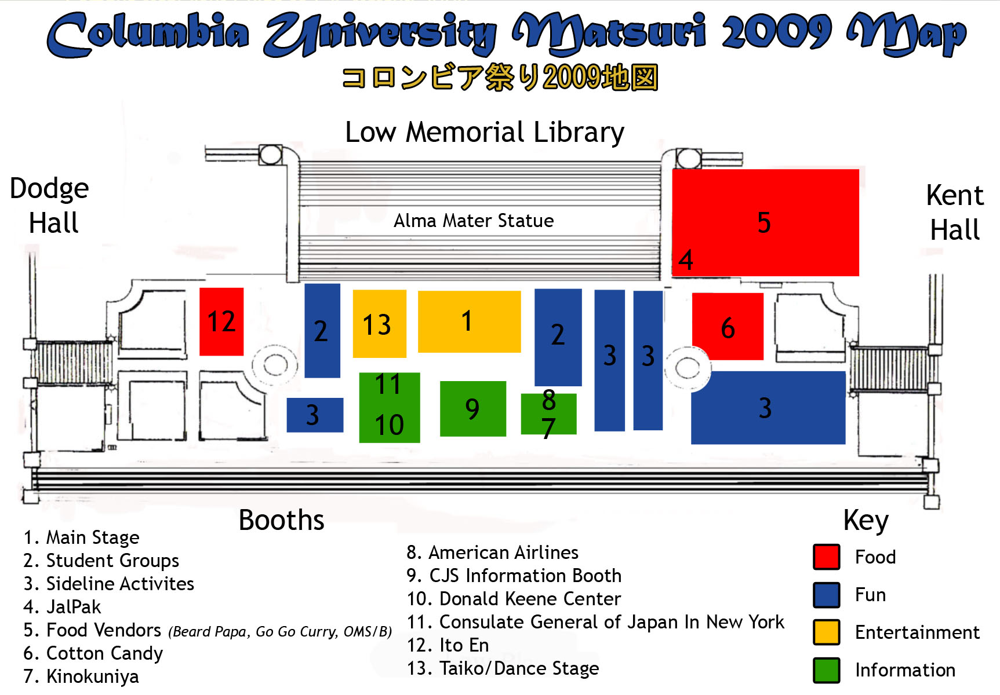
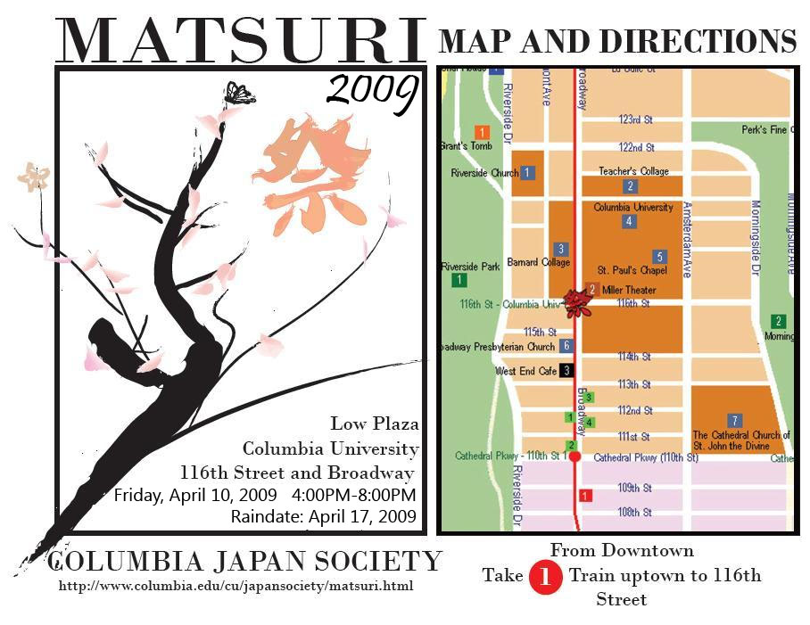

Matsuri 2009 is in the news. Check it out here: Matsuri 2009 on CTV.
---------------Thanks for Coming to Matsuri 2009-----------------
Matsuri 2009 was a huge success! It is thanks to you, the guests, for coming out and making it so great, to the sponsors who without them it certainly wouldn't be possible, to the volunteers who took time out of their day to help out and finally to the amazing Columbia Japan Society board who spent countless hours planning, calling, researching, and collaborating to make this Matsuri amazing. We enjoyed meeting each and every one of you. The smiles, and the laughs showed us just how greatly you appreciated Matsuri 2009. We hope to see you all back for a even bigger and better Matsuri 2010!!.
------------------------------------------------------------------------
Columbia Japan Society (CJS) of Columbia University in the City of New York (CU) will be holding our annual Japanese festival on the iconic Low Plaza!
Various restaurants, organizations, and perfomers from around New York have been invited, as well as groups within Columbia University. CJS will also be providing our very own entertainment on and off stage.
So come enjoy a wonderful afternoon with us at CJS Matsuri. We are sure you will get a cultural experience as well as some wacky, CJS fun!
Date: Friday, April 17, 2009
Time: 4:00 - 8:00 PM
Location: Low Plaza
 
{kind=link}